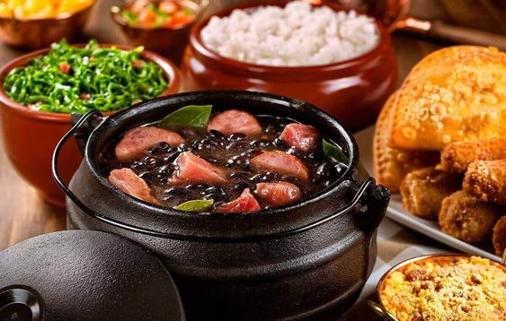

Degustando com Bela
culinária do Brasil é fruto de uma mistura de ingredientes europeus e de povos indígenas e africanos. Muitas das técnicas de preparo e ingredientes são de origem indígena, tendo sofrido adaptações por parte dos escravos e dos portugueses.Há uma grande quantidade de alimentos de origem indígena, assim como a forma de prepará-los e de consumi-los, que foram assimilados pela culinária brasileira. Podemos dizer com certeza que o grande destaque é a mandioca. Ela continua sendo um dos alimentos mais consumidos pela população brasileira. Três quartos do Brasil consomem diariamente farinha de mandioca, numa variedade impressionante de pratos: “piracuí”, a farinha de mandioca misturada à farinha de peixe bem seco e socados no pilão; pirão, farinha de mandioca misturada ao caldo de peixe; e o tradicional tutu.
Aqui você vai aprender muito. Começaremos pelo básico para você acompanhar bem o processo. vamos lá
venha cozinhar com bela
- cozinhar sempre é uma aventura
- muitos ingredientes,muita bagunça
- mais essas delícis valem a pena